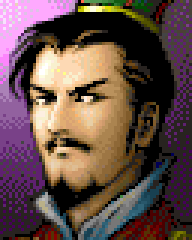
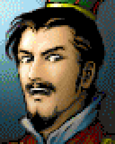

이번 과제
인물 0의 대화 초상화를 다른 기존 표정으로 바꿉니다. 처음에는 그림을 새로 제작하지 않고 파일 한 장을 교체하는 과정을 익힙니다.


인물 0 · face 0그림을 찾는 설정
→maps/heads/1.png화면에서 읽는 이미지
→대화 초상화그림 한 장 교체
이 연결은 현재 인물 0, face 0에 해당합니다. 모든 인물에서 face에 1을 더하면 파일명이 된다고 가정하지 않습니다.
작업 순서
content/assets/maps/heads/1.png를 content/assets 밖에 복사해 백업합니다. assets 안에 백업을 두면 게임 자산으로 함께 묶일 수 있습니다.2.png를 복사해서1.png자리에 덮어씁니다. 2.png 원본은 유지합니다. 아래 명령은 백업이 없을 때만 원본을 보관합니다.- 리소스를 다시 준비하고 R_01을 실행합니다.
- 첫 번째 대사는 원소입니다. 확인 입력으로 두 번째 대사까지 진행하면 인물 0의 바뀐 초상화를 볼 수 있습니다.
mkdir -p .onboarding-backups
cp -n content/assets/maps/heads/1.png .onboarding-backups/portrait-1.png
cp content/assets/maps/heads/2.png content/assets/maps/heads/1.png
./gradlew :core:processResources
./gradlew :desktop:run --args="--scenario=R_01"성공하면 이렇게 보입니다
이름과 대사는 같고 인물 0의 초상화 표정만 달라집니다. 걷는 캐릭터와 전투 스프라이트는 바뀌지 않습니다.
내 그림을 사용할 때
- 처음에는 192 × 240 픽셀 PNG로 맞춥니다. 확장자를 바꾸는 것만으로 형식이 변환되지는 않습니다.
- 비율·여백·잘림을 확인합니다. 투명 배경은 선택 사항이며 원래 두 파일은 불투명 PNG입니다.
- 화면별 그림 참조는 다릅니다.
face는 초상화,mapAvatar는 거리 표현,battleAvatar는 전투 그림 코드입니다. - 사용 권한이 있는 그림으로 교체하고 출처를 기록합니다.
되돌리기
cp .onboarding-backups/portrait-1.png content/assets/maps/heads/1.png
./gradlew :core:processResources